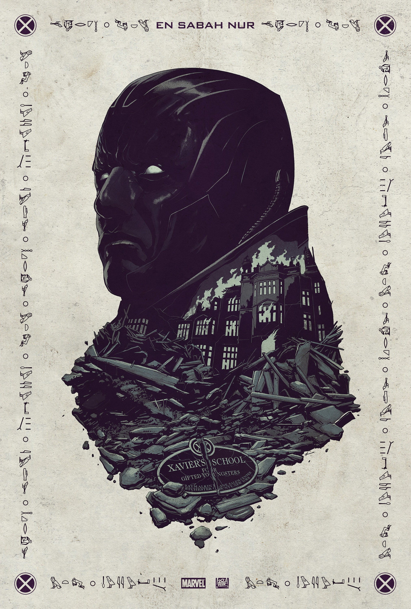

X-Men: Apocalypse
Un premio la 20th Century Fox lo merita ed è quello per il miglior reboot che non è un reboot (ma in realtà lo è), cioè sono stati i migliori a rimettere in sesto il proprio universo supereoistico, cambiando tutti gli attori legati ai personaggi con un espediente di trama perfettamente credibile.
Con l’eccezione di Hugh Jackman, in X-Men: Apocalisse non c’è più nessuno del vecchio cast grazie ad un paradosso temporale: il prequel anni ‘60, in cui James MacAvoy e Michael Fassbender interpretano Patrick Stewart e Ian MacKellen da giovani (cioè Xavier e Magneto), lentamente sta diventando il presente.
Con Giorni di un Futuro Passato a fare da passaggio del testimone adesso da questo film la realtà ufficiale è quella “nuova”, quella che come nei fumetti propone la storia americana un po’ modificata dalla presenza di mutanti.
È l’unica vera trovata ed è una bella variazione sul tema. Peccato sia sottosfruttata.
Il vero specifico della serie dei mutanti nel grande mare dei film tratti dai fumetti è da tempo quello di rimettere in scena la nostra società e i suoi conflitti attraverso una finta storia americana.
Le molte etnie confluite negli Stati Uniti e accettate a fatica, ma anche le sessualità messe al bando per decenni e tutto ciò che non viene socialmente accettato e considerato diverso, diventano i mutanti, la metafora dell’altro.
Sempre guardati con diffidenza, sempre messi al bando, cacciati ed emarginati ma anche sempre uniti. Almeno alcuni.
Guarda caso però un mutante molto potente riunirà intorno a sè altri mutanti “ribelli” convincendoli che la sua filosofia, quella del dominio sugli umani, è la migliore. Ancora una volta.
Quest’ultimo film di nuovo con Bryan Singer al timone come già per Giorni di un Futuro Passato (e si sente), ha la solidità dei migliori, riempie il cast all’inverosimile seguendo i film Marvel Studios nella tendenza al sovraffollamento, e individua un cattivo così potente da richiedere la mobilitazione generale. Trama impeccabile per un film così grosso, indispensabile per non uscire dal seminato classico, che poi è il terreno in cui si muovono i fumetti al cinema. Tutto sembra davvero a posto, viene anche replicata la scena al rallentatore con protagonista Quicksilver che tanto era piaciuta nel precedente. Può avere lo stesso effetto? Ovviamente no, perché l’abbiamo già vista e già ne abbiamo goduto e questo principio si applica purtroppo a tutto il film. Impeccabile, raccontato con maestria e molto scorrevole X-Men: Apocalisse però ripete quanto già visto con minime variazioni. Attraverso una trama nuova ripete i momenti topici, gli scontri di idee, i principi in contrasto e anche le psicologie individuali (Magneto nella fase polacca trova un momento che un po’ lo discosta dal solito ma in breve torna nei ranghi anch’egli).
Nella corsa alla filologia estrema, all’allargamento dell’universo e all’abbraccio di quanti più personaggi è possibile X-Men: Apocalisse sembra subire lo stesso destino di Captain America: Civil War, essere impeccabile eppur privo di personalità, un altro episodio autoconclusivo della grande serie dei mutanti che non aggiunge molto a quel che già avevamo ammirato ma ripete il piacere. Addirittura anche un campione della recitazione come Oscar Isaac (Apocalisse) non fa la differenza, un one man show come Michael Fassbender a cui vengono dedicati non pochi assolo non riesce a convincere “realmente” come fa negli altri film che interpreta e neppure una primatista dell’ottima recitazione in grandi blockbuster come Jennifer Lawrence è più tarata su standard da catena di montaggio.
Tutti bravissimi ma nessuno davvero al suo massimo.
Insomma non gli si può davvero volere male a questo film, perché la confezione è splendida, ma è chiaro anche che sembra giusto aspettarsi di più dal cinema.
